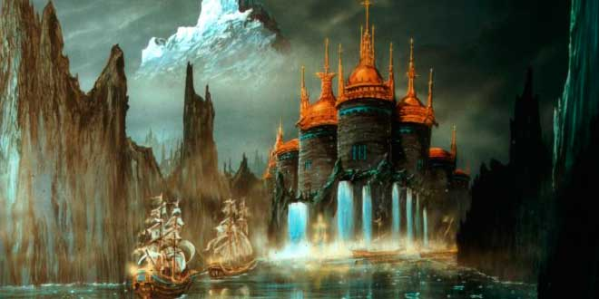
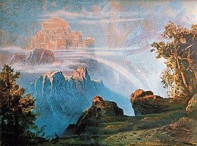

| MONUMENTOS |
DEFINICIÓN |
FOTO |
| ASGARD |
es el mundo de los Æsir, gobernado por Odín y su esposa Frigg y
rodeado por una muralla incompleta, atribuida a un anónimo hrimthurs, amo del caballo
semental
Svaðilfari, de acuerdo a Gylfaginning. Dentro de Asgard, se encuentra el Valhalla.
Forma parte de uno de los Nueve Reinos de Yggdrasil (o Yggdrasill), un fresno perenne
también
llamado el árbol de la vida o fresno del universo de la mitología nórdica. De las raíces y
ramas
del árbol, se mantienen unidos los mundos de Asgard,Midgard, Helheim, Niflheim, Muspellheim,
Svartalfheim, Alfheim, Vanaheim y Jötunheim.
|
 |
| GLITNIR |
Es el hogar de Forseti, dios de la justicia, y la sede de la
justicia
entre los Æsir en la mitología nórdica. Glitnir es un simbolismo de la importancia de la
discusión más que la violencia como manera de solucionar conflictos dentro de la tradición
nórdica. Tiene un techo plateado y dorados pilares. |
 |
| KÖRMT Y ÖRMT |
Son, en la mitología nórdica, dos ríos que el dios Thor vadea cada
día
cuando se desplaza a Yggdrasill. Se menciona en una estrofa de Grímnismál y Edda poética.
|
 |
| MANANTIAL DE MIMIR |
Es una fuente donde se resguardaba la sabiduría y la inteligencia.
Se
encontraba en el centro del mundo, conforme a la cosmología de las religiones nórdicas, bajo
las
raíces del fresno Yggdrasil. Estaba custodiado por el gigante Mimir, al cual le debe su
nombre.
Conforme a la narración del Edda menor, Odín tuvo que ofrecer uno de sus ojos para poder
beber
del manantial. |
|
| VALHALLA |
Es un enorme y majestuoso salón ubicado en la ciudad de Asgard
gobernada por Odín. La mitad de los muertos en combate son elegidos por Odín y viajan al
Valhalla guiados por las valquirias, mientras que la otra mitad van al Fólkvangr de la diosa
Freyja. En el Valhalla los difuntos se reúnen con las masas de muertos en combate conocidos
como
einherjer, así como con varios héroes y dioses germánicos legendarios, mientras se preparan
para
ayudar a Odín en el Ragnarök, la batalla del fin del mundo. Ante la gran sala, cuyo techo
está
cubierto con escudos dorados, se halla el árbol dorado Glasir. Alrededor del Valhalla moran
varias criaturas, como el ciervo Eikþyrnir y la cabra Heiðrún, que pacen el follaje del
árbol
Læraðr. |
 |